Career and experiences
I used to love the Dr. Seuss book “Oh, the Places You’ll Go!” This page reflects a vocational life of learning when you follow the Lord. Oh, the places you’ll go!
Employers and clients
-
The Church of Eleven22
Ordained Pastor 2025; Pastor of Ministry Partnerships 2026 to present
Currently working with leadership to help The Church of Eleven22 steward its God-given national platform as the fastest growing church in America and the fourth biggest church in the country: first around nationwide pastoral care, through pastor retreats, coaching and epic hunting and fishing trips, and second around civic engagement as we walk through faith and the Christian’s role in politics and government.
-
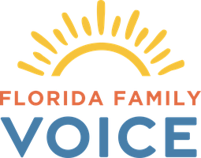
Florida Family Voice
Chief Executive Officer 2025 to present
Asked to join Florida Family Voice (FFV) as CEO to continue what he started in the Executive Office of the Governor at the intersection of faith, politics, policy and government. His role is to lead the vision and strategy of FFV in advancing Florida’s premier defender of Life, Marriage, Family and Religious Liberty.
-
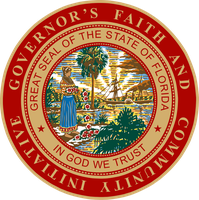
State of Florida, Executive Office of the Governor
Florida’s first Governor’s Liaison for Faith and Community 2019 to 2025
Appointed as the state of Florida’s first ever Governor’s Liaison for Faith and Community in 2019 by Governor DeSantis when he was first elected. Governor DeSantis wanted to make faith a priority in the state, and he asked Erik to join his leadership team in the Executive Office of the Governor. Erik created and launched the Governor’s Faith and Community Initiative Office and led it for nearly six years, including through Covid. Under his leadership more than 2,200 faith institutions and 5,600 nonprofit partners were collaboratively mobilized to serve the most vulnerable, and CarePortal was rolled out across a whole state for the first time. He also helped launch and build the Hope Florida initiative and served as its president in 2025.
-
For Others
Founding board member, then interim CEO and President 2018 to 2024
Helped start Angel Armies (now For Others) with Christian musician Chris Tomlin in 2018. For Others is a nation-leading nonprofit created to address the foster care crisis in the United States. Erik spent five years there, first as a founding board member and then as interim CEO and President.
-
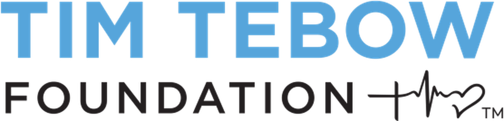
Tim Tebow Foundation
Founding President and Executive Director 2011 to 2017
Erik served as the founding President and Executive Director of the Tim Tebow Foundation for nearly seven years. Under his leadership, TTF launched numerous domestic and international ministry programs, including the Tebow CURE Hospital in the Philippines and the worldwide movement of Night to Shine, a prom for people with special needs.
He also built and owned companies with Timmy that handled all aspects of speaking engagements, marketing, business building, movie production and more.
-
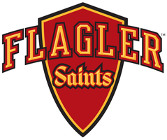
Flagler College
Adjunct Professor, Sales in Sports Management 2008 to 2011
-
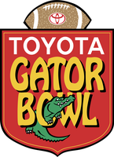
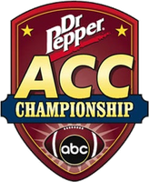
Gator Bowl Association
Intern to Vice President and Chief Marketing Officer 1999 to 2011
Beginning in 1999 as the Gator Bowl parade intern, Erik spent almost 12 years being promoted through many different positions at the Gator Bowl Association. His roles included Director of Ticketing, Director of Promotions and the PATCH program, Director of the ACC Championship and ultimately Chief Marketing Officer and Vice President.
The most notable of his roles came in 2004, when he was named the first ever Director of the ACC Championship when the ACC expanded to 12 teams and started its football championship. He built and ran the first three championship games, as chief liaison to the ACC, Dr Pepper, ABC Sports and 90 game sponsors.
-
University of Florida
University Athletic Association marketing intern Spring 2000
Erik’s first job in college athletics came as an intern for the University of Florida’s athletic association.
Businesses owned
-
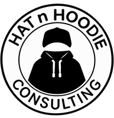
Hat n Hoodie Consulting
Founder 2017 to present
Hat n Hoodie Consulting (formerly Mercy Seeds Consulting) is a national consulting organization designed for individuals, for-profits, nonprofits, ministries and families stewarding platforms of affluence or influence. More on the Consulting page.
-
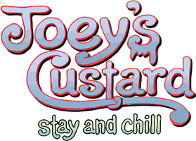
Joey’s Custard
Independent owner, Sanibel Island 2021 to 2022
Joey’s Custard was a locally and family-owned small business, “where our family serves your family,” until Hurricane Ian closed it in September 2022.
-
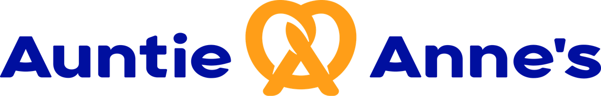
Auntie Anne’s Pretzels
Owner and franchisee 2017 to 2024
A co-branded storefront with Planet Smoothie in St. Augustine, Florida. Auntie Anne’s is the world’s largest soft pretzel franchise.
Designed, built and operated an Auntie Anne’s food truck across Northeast Florida, 2019 to 2021.
-
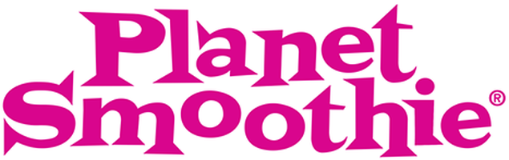
Planet Smoothie
Owner and franchisee 2017 to 2024
A co-branded storefront with Auntie Anne’s in St. Augustine, Florida. Planet Smoothie is the world’s leading provider of great-tasting, good-for-you products served in an energized, enthusiastic environment.
-
TD Autographs
Co-owner 2012 to 2017
TD Autographs was a one-stop shop for autographed Tim Tebow memorabilia.
A partnership that handled all logistics and sales for Tim Tebow autographs.
-
TD Speaking
TD Speaking
Owner 2012 to 2017
TD Speaking was the booking company for all Tim Tebow speaking engagements from 2012 to 2017.
Ran all logistics for Tim Tebow speaking events from booking through implementation.
Projects
-
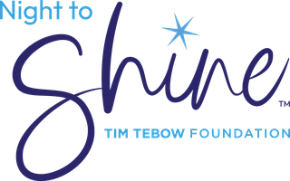
Night to Shine
Began and implemented at the Tim Tebow Foundation 2014
A prom night experience for individuals with special needs, now a worldwide movement held in all 50 states and 24 countries, representing over 32 denominations of the Christian church.
-
Run the Race
Executive producer 2016 to 2019
A 2019 national theatrical release made with Tim and Robby Tebow. The film highlights the bonds of brotherhood in the midst of two different worldviews.
-
He Calls Me Daughter
Executive producer 2024 to 2026
A 2026 nationally released faith-based documentary, now in countries around the world, exploring the impact of the “father wound” on women and how healing is found through God, the great Father. This film was the father wound follow-up to the Kendrick Brothers’ release of Show Me the Father, for the man’s father wound.
-
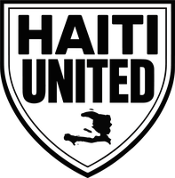
Haiti United
Co-founder and host 2024 to present
Haiti United is a movement of 50 enduring organizations, ministries and leaders who continue to serve in Haiti and unite on a love for Jesus and hope for Haiti.
Boards, recognition and the rest
-
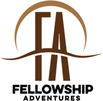
Fellowship Adventures
Chairman of the Board since 2020, executive board since 2019
Hunting and fishing trips for ministry leaders to find rest and community.
-
For Others
Founding board member 2018 to 2024
For Others is Christian musician Chris Tomlin’s nation-leading nonprofit addressing the foster care crisis in the United States.
-
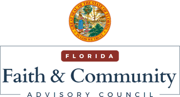
Florida’s Statewide Faith and Community Advisory Council
Member since 2019, Chairman from 2022 to 2025
A 25-person, legislatively established council advising the Governor, the President of the Senate and the Speaker of the House on matters of faith and community throughout Florida.
-
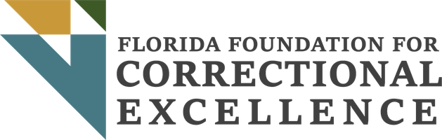
Florida’s Foundation for Correctional Excellence
Board member 2019 to 2024
Florida’s Foundation for Correctional Excellence is a nonprofit direct support organization that serves the Department of Corrections by bringing together public and private partners to increase investment in transition programs and workforce training to further expand re-entry efforts.
-
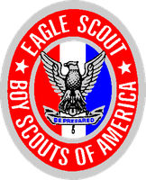
Eagle Scout
May 1996
-
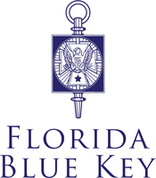
Florida Blue Key
Member, University of Florida
Florida Blue Key is the oldest and most prestigious honorary in the state of Florida.
Every one of these has a story
Invite Erik to speak